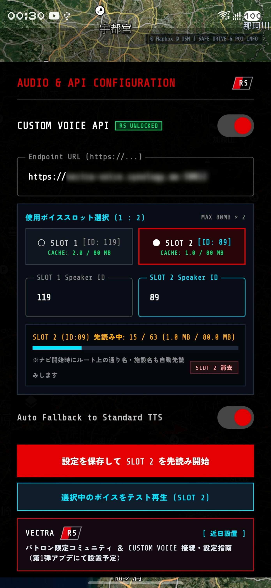
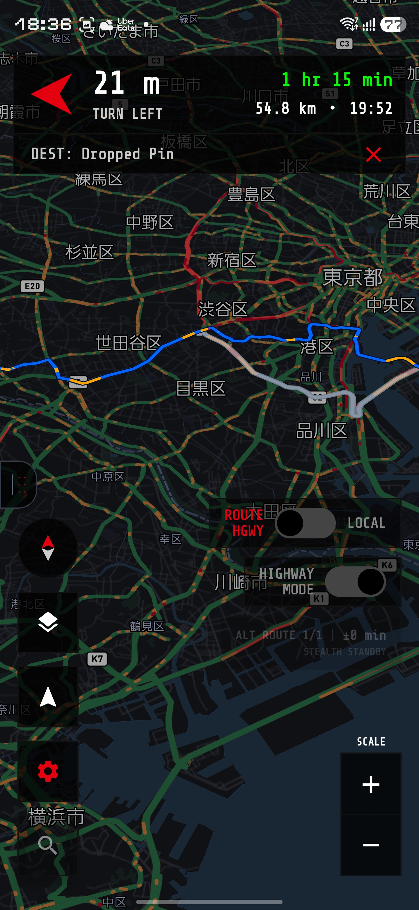

目的地設定ゼロで首都高C1・湾岸線・全国高速の今と先を射抜く「走り屋モード」搭載。
さらに最上位 VECTRA RS では、デュアルスロット（SLOT 1:2）＆160MBゼロ遅延プリロード音声エンジンを解放。
Equipped with "Runner's Mode" to lock onto Shutoko C1, Bayshore, and nationwide expressways with zero destination setup.
Top-tier VECTRA RS unlocks the Dual-Slot (SLOT 1:2) & 160MB Zero-Latency Preload Voice Engine.
起動画面（首都高C1背景）の下部にある Sign in with Google ボタンからご自身のGoogleアカウントでログインしてください（タイトル画面右上の [ EN | JP ] トグルから表示言語を即座に切り替え可能です）。
一度ログインすると端末内に認証情報が記憶され、次回からは「LAUNCH VECTRA」の1タップのみで即座にメインHUDへ突入します。アプリの上書きアップデートや再インストールを行った場合も、当月の利用枠が自動的に引き継がれます。
Sign in with your Google account using the Sign in with Google button on the title screen (you can switch the display language anytime via the [ EN | JP ] toggle at the top-right of the login card).
Once authenticated, your credentials are saved locally so you can jump straight into the main HUD with a single tap on "LAUNCH VECTRA" next time. Your monthly quota is automatically preserved across app updates or reinstallations.
| 機能カテゴリー FEATURE CATEGORY | FREE (¥0) | PRO (¥300 / mo) | VECTRA RS (¥500 / mo) | リセット周期・備考 RESET CYCLE & NOTES |
|---|---|---|---|---|
| 走り屋モード（高速道路 IC / SA / PA / JCT ＆ スタバ全49箇所捕捉） Runner's Mode (Expressway IC / SA / PA / JCT & 49 Starbucks Radar) | UNLIMITED | UNLIMITED | UNLIMITED | 目的地設定不要・全プラン常時無制限 No destination required / Always unlimited |
| ルートナビゲーション案内開始 Turn-by-Turn Route Navigation | 月間 6 回まで 6 runs / mo | 月間 100 回まで 100 runs / mo | 月間 100 回まで 100 runs / mo | 毎月1日リセット（※300m以内の近距離は消費なし・40m圏内自動到着終了） Resets 1st of month (Trips within 300m not counted / 40m auto-arrival) |
| 高精度 目的地キーワード検索 Destination Keyword Search | 月間 6 回まで 6 searches / mo | 月間 100 回まで 100 searches / mo | 月間 100 回まで 100 searches / mo | 毎月1日リセット（※U字タブ3拠点・マップ長押しピンは検索消費ゼロ） Resets 1st of month (Quick Pins & Dropped Pins use 0 search quota) |
| U字タブ お気に入り3拠点（[Home] / [Favorite1] / [Favorite2]） Pull-Tab 3 Quick Pins ([Home] / [Favorite1] / [Favorite2]) | LOCKED [PRO / RS] | フル解放 UNLOCKED | フル解放 UNLOCKED | 検索枠を消費せず1タップでルート案内開始 1-tap route launch without consuming search quota |
| タクティカル・マップスタイル切替 Tactical Map Style Layers | 標準 2種 (DAY / STREETS) Standard 2 Styles | 全 7種 フル解放 All 7 Styles | 全 7種 フル解放 All 7 Styles | 夜間トラフィック・ダーク・航空写真・3Dを含む全7種（詳細はセクション05） Includes Traffic Night, Stealth Dark, Satellite & 3D Standard (See Sec 05) |
| CUSTOM VOICE（SLOT 1:2 デュアル音声 ＆ 160MB先読みエンジン） CUSTOM VOICE (SLOT 1:2 Dual Voice & 160MB Preload Engine) | LOCKED [RS限定] | LOCKED [RS限定] | RS PATRON UNLOCKED | 2話者ID保持・80MB×2先読み・ルート通り名自動プリロード（詳細はセクション03） Dual Speaker IDs, 80MB×2 Preloader & Route Street Pre-Caching (See Sec 03) |
1. 画面右側の ROUTE HGWY スイッチが左側（HGWY）になっていることを確認します。
2. 目的地を設定しないまま高速道路・都市高速の本線に乗り、HIGHWAY MODE スイッチをONにするだけで「走り屋モード」が起動！直近3つの施設を下から上へ積み上げ表示します。
※右側のプレビューで「東名高速（海老名SA：スタバ＆GAS表示）」と「首都高 C1/湾岸（大黒PA：P/WC表示）」、および「日本語 ⇔ 英語表記」を実際に切り替えて比較できます。
1. Ensure the ROUTE HGWY switch on the right side of the screen is set to the left (HGWY).
2. Enter any expressway mainline without setting a destination and flip HIGHWAY MODE ON. Runner's Mode activates immediately, stacking the next 3 upcoming facilities from bottom to top!
* Use the interactive preview on the right to compare "Tomei Expwy (Ebina SA: Starbucks & GAS)" vs. "Shutoko C1/Bayshore (Daikoku PA: P/WC)" and toggle between JA / EN labels.
ナイトドライブや長距離ツーリングのコーヒーブレイクを逃さないための「隠れ機能」を搭載！
スターバックスが併設されている全国の高速SA・PA 全49箇所（海ほたるPA、湾岸幕張PA上下、守谷SA上下、蓮田SA上り、羽生PA下り、海老名SA上り、EXPASA足柄上下、酒々井PA上下、第三京浜・都筑PA上り、談合坂SA上下など）が前方に迫ると、進行方向の上下線まで厳密に判別して施設カード内に
STARBUCKS
アイコンが自動点灯します。
※スタバ併設エリアでは視認性を最大化するため、通常の P WC タグを自動省略し、給油可否がすぐ分かる重要な GAS タグ（SAのみ）と横長ワイドなスタバアイコンのみを優先表示します！
Never miss a coffee break during night drives or long-distance touring!
When approaching any of the 49 expressway SA/PAs with a Starbucks store nationwide (Umihotaru PA, Wangan-Makuhari PA, Moriya SA, Hasuda SA Inbound, Ebina SA Inbound, Ashigara SA, Shisui PA, Tsuzuki PA Inbound, Dangozaka SA, etc.), VECTRA strictly verifies your travel direction (Inbound/Outbound) and lights up the
STARBUCKS
neon badge.
* For maximum cockpit legibility at Starbucks locations, standard P and WC tags are omitted so the critical GAS (fuel) tag and wide Starbucks badge stand out clearly!
※記載されている店舗名・ブランド名は各社の商標または登録商標であり、本アプリでは施設案内（POI情報）の目的でのみ表示しています。各企業との提携・協賛関係を示すものではありません。
*All store names and brand names mentioned or displayed are trademarks or registered trademarks of their respective owners, and are shown strictly for Point of Interest (POI) informational purposes. Their use does not imply any affiliation or endorsement.
高速道路のJCT分岐やレーンキープが連続するシーンにおいて、発話のたびに外部サーバーへ通信して数秒待たされるリアルタイム音声合成は実用になりません。
最上位グレード 『VECTRA RS（月額500円）』 のために専用設計された TACTICAL VOICE ENGINE は、プライベートHTTPS音声合成エンドポイントと直結し、2種類の話者ID（SLOT 1 / SLOT 2）の常時保管・ワンタップ切替と、最大160MB（80MB × 2スロット）の2段階バックグラウンド先読み（プリロード）機構を搭載しています。
On high-speed expressways with rapid junction splits, waiting several seconds for on-the-fly network TTS synthesis is unacceptable.
Exclusively engineered for our top-tier "VECTRA RS (¥500/mo)" edition, the TACTICAL VOICE ENGINE links directly to your private HTTPS neural TTS endpoint—featuring instant Dual-Slot (SLOT 1 / SLOT 2) speaker switching and a 160MB (80MB × 2 slots) two-stage background preloader.

2つの異なる Speaker ID（例：昼の高速巡航用の重厚なオペレーターボイスと、深夜の首都高クルーズ用のクールなAIアナウンスボイス）を常時ペア保管。SLOT 1 と SLOT 2 のトグルをタップするだけで、キャッシュを消すことなく瞬時にコックピットの相棒を切り替えられます。
Store two distinct Speaker IDs side-by-side (e.g., a deep tactical operator for daytime cruising and a cool AI announcer for midnight runs). Toggle between SLOT 1 and SLOT 2 with a single tap without losing cached audio.
「設定を保存して先読み開始」ボタンを押した瞬間、URLと両スロットのIDを端末へ永続保存すると同時に、ナビ基本定型句（距離案内・左右分岐・JCT/SA/PA・スタバ通知等）をバックグラウンドで一括ダウンロード。OSの自動削除を受けないアプリ専用領域（各スロット最大80MB・計160MB）へピン留め保護します。
Tapping "SAVE & PRELOAD VOICE" permanently saves your Endpoint URL and Speaker IDs while sequentially downloading core navigation phrases into OS-protected internal storage (up to 80MB per slot / 160MB total) with live progress telemetry.
目的地をセットしてルートが確定した瞬間、出発地から終点までの全ステップの通り名・方面名・IC出口・SA/PA名称を自動抽出し、走行開始と同時に裏側で先読み蓄積。実際にその分岐へ到達するずっと前に音声ファイルが端末内に揃うため、山手トンネルやアクアラインなどの長大な地下トンネル（電波圏外）でもカスタム音声が一切途切れません。
The moment a route is confirmed, VECTRA scans every step from origin to destination—proactively synthesizing upcoming street names, junction exits, and SA/PA alerts in the background. Even inside deep underground expressway tunnels with zero cell reception, your custom voice continues speaking seamlessly.
通信はすべて https://（SSL/TLS暗号化）に準拠。万が一外出先で自宅サーバーやVPNが一時的に応答しない場合でも、Auto Fallback to Standard TTS スイッチによりOS標準TTS（スロット別ピッチ最適化済み）へ即座に自動フォールバックし、ナビの音声案内を絶対に止めません。
All API traffic enforces strict https:// encryption. If your private server is unreachable, Auto Fallback to Standard TTS seamlessly hands off guidance to the built-in OS speech engine with slot-tuned pitch.
画面左下（2段目）の「レイヤー切替ボタン」をタップするたびに、走行シーンや昼夜に合わせて7種類のMapbox v11タクティカルマップを瞬時にローテーション切り替えできます。下の7つのボタンをタップして実機スクリーンショットと各モードの特性を確認してください。
Tap the Map Style Layer Button (bottom-left, 2nd button) to cycle through all 7 Mapbox v11 tactical map styles tailored for day/night runs and urban 3D legibility. Select any of the 7 buttons below to inspect real cockpit screenshots.

ダーク背景にリアルタイム渋滞ライン（緑・橙・赤・暗赤）とネオンルートを高コントラストに浮かび上がらせるVECTRA標準の夜間戦闘モード。首都高や都市高速の複雑なJCT網でも瞬時に状況判断が可能です。
| ボタン / 設定項目 CONTROL / SETTING | 配置場所 LOCATION | 機能・動作詳細 FUNCTION & BEHAVIOR |
|---|---|---|
| U字クイック拠点タブ U-Shaped Quick Pin Tab | 左端（コンパス上） Left Edge (Above Compass) | 右へスワイプ（またはタップ）で [Home] [Favorite1] [Favorite2] ドロワーを展開し、ワンタップで目的地セット・位置登録を行います（PRO / RS解放）。 Swipe right (or tap) to open the [Home] [Favorite1] [Favorite2] drawer for 1-tap navigation or pin registration (PRO / RS). |
| コンパスボタン Compass Button | 左下（1段目） Bottom-Left (1st) | タップするごとにカメラ視点を NORTH-UP 2D（北固定） ➔ HEAD-UP 2D（進行方向上） ➔ HEAD-UP 3D（3D俯瞰） の順で切り替えます。 Cycles camera perspective through NORTH-UP 2D ➔ HEAD-UP 2D ➔ HEAD-UP 3D. |
| レイヤー切替ボタン Map Style Layer Button | 左下（2段目） Bottom-Left (2nd) | 昼夜トラフィック・ステルスダーク・サテライト（航空写真）・3Dスタンダードなど 全7種類のマップスタイル をワンタップで巡回切り替えします（FREEは標準2種 [TRAFFIC DAY / STREETS]、PRO/RSは全7種フル解放）。 Cycles through all 7 map styles including Traffic Day/Night, Stealth Dark, 3D Standard, and Satellite Streets (2 styles [TRAFFIC DAY / STREETS] in FREE; all 7 in PRO/RS). |
| 自車3Dロックボタン 3D Follow Lock Button | 左下（3段目） Bottom-Left (3rd) | 地図をスクロールして現在地から離れた際、ワンタップで自車位置の HEAD-UP 3D 追従モードへ即座に戻します。 Instantly re-centers on your vehicle and restores HEAD-UP 3D tracking after panning the map. |
| QUICK DESTINATIONS (PIN) | 設定（⚙️）内 In Settings (⚙️) | お気に入り3拠点の登録状態（設定済 / 未設定）を一覧管理します。タップで位置の登録・変更、長押しで登録消去（未設定へ戻す）が可能です。 Manage your 3 quick pins (SET / UNSET). Tap to set or update location, or long-press to clear. |
| Traffic Line Width | 設定（⚙️）内 In Settings (⚙️) | 地図上の渋滞情報ライン（緑・橙・赤・暗赤）の太さを 0.5x 〜 2.0x のスライダー、または THIN / STD / BOLD プリセットでリアルタイムに調整・保存できます。 Adjust real-time traffic congestion line thickness from 0.5x to 2.0x via slider or THIN / STD / BOLD presets. |
| Map / Voice Language | タイトル画面 ＆ 設定（⚙️） Title Screen & Settings (⚙️) | 地図ラベル・全ダイアログ・高速施設リスト・音声案内の言語を 日本語（JP） と 英語（EN：欧州車純正コックピット風） からいつでも切り替えできます。 Switch map labels, dialogs, highway facility cards, and voice guidance between English (EN) and Japanese (JP) anytime. |
| HUD Opacity | 設定（⚙️）内 In Settings (⚙️) | 上下のHUDパネルおよび高速施設リストの背景透過度を 85% / 75% / 70% から好みに合わせて切り替えられます。 Customize background opacity of HUD panels and facility cards across 85% / 75% / 70%. |
| CUSTOM VOICE (SLOT 1:2 & PRELOAD) | 設定（⚙️）内 [RS限定] In Settings (⚙️) [RS ONLY] | VECTRA RS（月額500円パトロン版）専用機能として、デュアルスロット（SLOT 1:2）話者切替・最大160MB（80MB×2）定型句＆ルート通り名自動プリロード・RS専用コミュニティ枠を解放します（詳細はセクション03）。 Exclusive to VECTRA RS (¥500/mo Patron Edition): unlocks Dual-Slot (SLOT 1:2) speaker switching, 160MB (80MB×2) static & route street preloading, and RS community access (See Sec 03). |
| RESTORE & DELETE ACCOUNT | 設定（⚙️）最下部 Bottom of Settings (⚙️) | 機種変更時の「購入情報の復元（PRO / RSライセンス同期）」、およびアカウント登録情報・端末内データの初期化リセット（DELETE ACCOUNT & DATA）を実行します。 Restore Google Play subscriptions (PRO / RS) on new devices, or reset account registration and local device settings (DELETE ACCOUNT & DATA). |